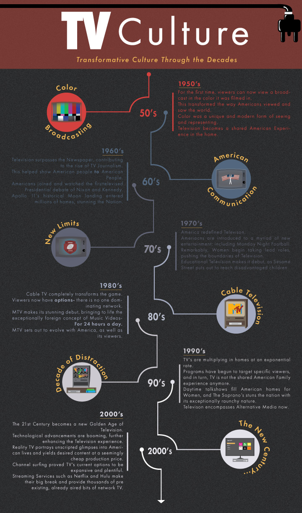
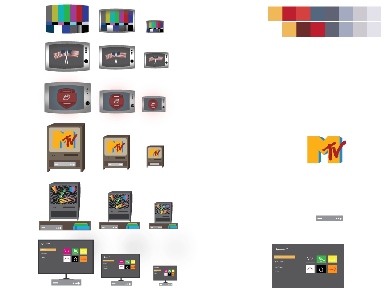
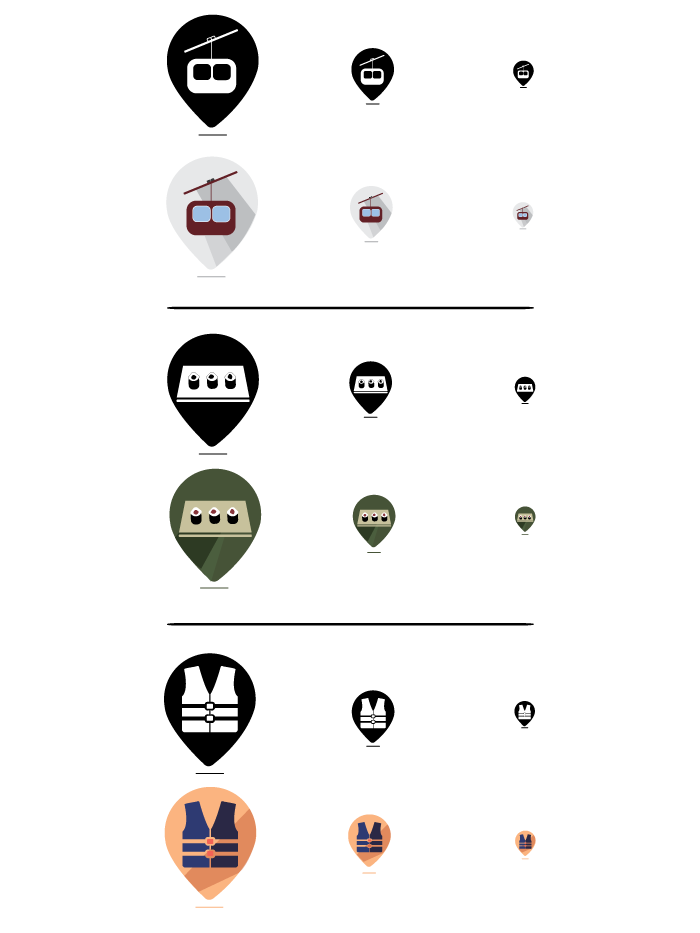
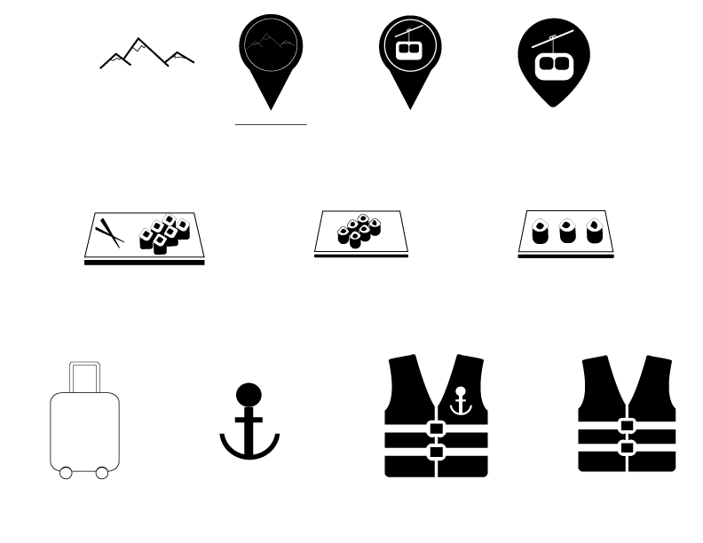
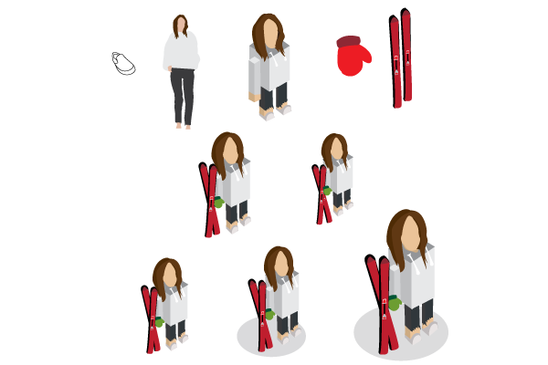

December 4, 2019
Project 4: Timeline

Tracing Television Culture over the Decades
Television has developed this extremely transformative power over American culture, as well as society. It is easily traceable and extremely unique to consider. My research was extensive and covered a broad range of shifts over time. I wanted to hone in specifically on how Television communicates with us, the viewer. While the technological advancements are extraordinary, so are the culturual shifts. Television has fully immersed itself into virtually every single American home, while both bringing families together, as well as individually isolating them.
This was a tedious, though enjoyable graphic for me. I enjoyed the creative control I had, starting with the foundations and research. I wanted to focus on the physical appearance shifts of the TV, as well as its cultural effect. This is why I made it a point to put an emphasis on the visible icons. The "circuit" concept for the body of my timeline is to show the movement and connected nature across the decades.

Use of Scalable Icon knowledge / Creative Process for Project 4.
November 4, 2019
Project 3: Article Illustrations

FIFA Must Pressure Iran to Let Women Attend Soccer Matches: NY Times
This graphic tells an interesting story. My knowledge surrounding Women's sports, soccer in particular, did not go much further than the United States prior to this study. I was aware of severe gender inequalties in the Middle East, but not their involvement in sports. Women were previously forbidden from stadiums and not permitted to be spectators at any matches. Fifa took the initiative to take on the Government in a legal battle to start providing Women with the opportunities and rights they deserve, specifically in Soccer. My graphic portrays a dramatic scene of Iranian women dressed in traditional hijabs, submitting tickets. The story to be told here through the ticket scanner is the demand to "Let Our Women Watch." Sports are a unifying front and major organizations, like Fifa, must be on the front lines of the fight to ensure equal opportunites across genders.

The Best Women’s Soccer Team in the World Fights for Equal Pay: NY Times
Gender inequalties across sports, soccer specifically, are extremely prevalent in today's society. Following the US Women's National Team's third World Cup Title, I started to pay closr attention to the discrepancies surrounding the sport I grew up admiring. It is important to note and recognize the efforts of these women and players. My graphic takes on the narrative of a typical court room scene. The goal was to illustrate like that of a courtroom Sketch Artist to dramaticize the nature of the case.

The Women’s World Cup’s Other Inequality: Rich vs. Poor: NY Times
Aside from gender and wage disparities, there are still plenty other unspoken inequalties across Women's Soccer. Simply put, teams are struggling significantly to stay afloat and fund their competitive opportunities. We are faced with nations who are riddled and inundated with debt and extremely high poverty rates, thus failing to support their National Atheltic Teams. These same countries, Jamaica specifically in the case of my graphic, struggle to make ends meet in funding their team throughout the World Cup. The Reggae Girlz, work to fundraise and collect donations on their own, to fund their travel, training, and atletic expenses in the build up for the World Cup. The goal of my graphic is to show the far off and distant journey of getting to the elite World Cup. I worked with a dull, emotional, impoverished setting that eventually finds its way to the glitz and glam behind the stadium.
October 2, 2019
Project 2: Scalable Icon

For my Scalable Icon Package, I worked with a travel concept. I wanted to represent myself specifically through travel, while also incorporating aspects of it that I frequent, as well as value. I was aiming for consistency, which is why I chose to use the "travel point" across all three icons. My goal was to emphasize that these are personal and surround one underlying concept.

Progress / Creative Deliverables for Project 2.
September 4, 2019
Project 1: Avatar

For Project 1, we worked on isometric avatars that best represent ourselves. I wanted to incorporate important and prominent aspects of my life, such as my typical fashion sense, as well as skiing, a passionate hobbie of mine. I worked with a cube form and body type to emphasize the isometruc aspect of the assignment.

Progress / Creative process for Project 1